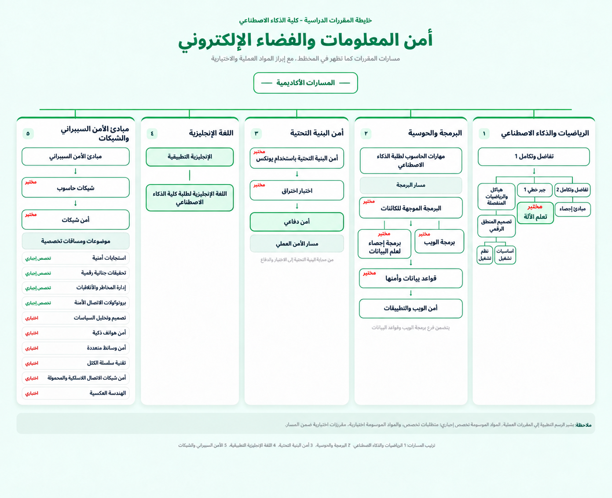

أمن المعلومات والفضاء الإلكتروني
دليل طالب الأمن السيبراني، بمكان واحد.
استكشف الخطة الشجرية، افتح ملفات المواد، وابحث عن الشروحات وخطة الفصول المقترحة بسهولة.
01 / مسار التخصص
الخطة الشجرية
تعرّف على ترتيب المواد وعلاقاتها في المخطط.
02 / ملفات الدراسةالمواد PDF
افتح مجلد ملفات المواد الدراسية.
03 / المحتوى التعليميشرح المواد
صفحة مخصصة لشروحات المواد.
04 / تنظيم الفصلخطة مساعدة في تنزيل المواد
صفحة مخصصة للمساعدة في اختيار المواد.
05 / دراسة تفاعليةNotebookLM 📚
افتح NotebookLM لدراسة ملفاتك وإنشاء ملخصات وأسئلة.
الخطة الشجرية
مخطط مواد تخصص أمن المعلومات والفضاء الإلكتروني.

فتح الصورة بالحجم الكامل ↗المواد PDF
ملفات المواد متاحة عبر المجلد التالي.
شرح المواد
اكتب اسم المادة لعرض الشروحات المطابقة.
ما لقينا مادة بهذا الاسم. جرّب كلمة أقصر أو تأكد من كتابة الاسم.
المواد الرياضية
- تفاضل وتكامل 1مشاهدة الشرح ↗
- تفاضل وتكامل 2مشاهدة الشرح ↗
- جبر خطيمشاهدة الشرح ↗
- الاحتمالات والإحصاءمشاهدة الشرح ↗
مواد برمجية
- مهارات حاسوب لطلبة الذكاء الاصطناعيمشاهدة الشرح ↗
- برمجة موجهة للكائناتمشاهدة الشرح ↗
- هياكل بياناتمشاهدة الشرح ↗
- برمجة ويبمشاهدة الشرح ↗
باقي المواد
- مبادئ الأمن السيبرانيمشاهدة الشرح ↗
- شبكات حاسوبمشاهدة الشرح ↗
- الهياكل والرياضيات المنفصلةمشاهدة الشرح ↗
- أمن شبكاتمشاهدة الشرح ↗
خطة مساعدة في تنزيل المواد
السنة الأولى
| الفصل الأول | الفصل الثاني | الفصل الصيفي |
|---|---|---|
|
|
|
السنة الثانية
| الفصل الأول | الفصل الثاني | الفصل الصيفي |
|---|---|---|
|
|
|
السنة الثالثة
| الفصل الأول | الفصل الثاني | الفصل الصيفي |
|---|---|---|
|
|
|
السنة الرابعة
| الفصل الأول | الفصل الثاني |
|---|---|
|
|
📚 الدراسة باستخدام NotebookLM
افتح NotebookLM وأضف ملفات محاضراتك إلى دفتر خاص بك، ثم استخدم أدواته للمراجعة والتلخيص وطرح الأسئلة.
فتح NotebookLM ↗يفتح الرابط موقع NotebookLM في تبويب جديد؛ قد تحتاج إلى تسجيل الدخول بحساب Google. إذا وفّرت رابط دفتر مشتركًا لمادة محددة، يمكن وضعه هنا بدل الرابط العام.